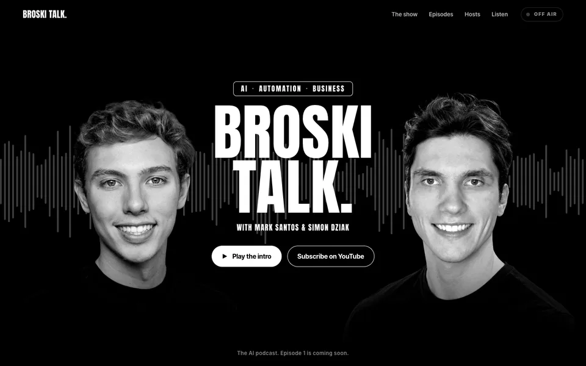
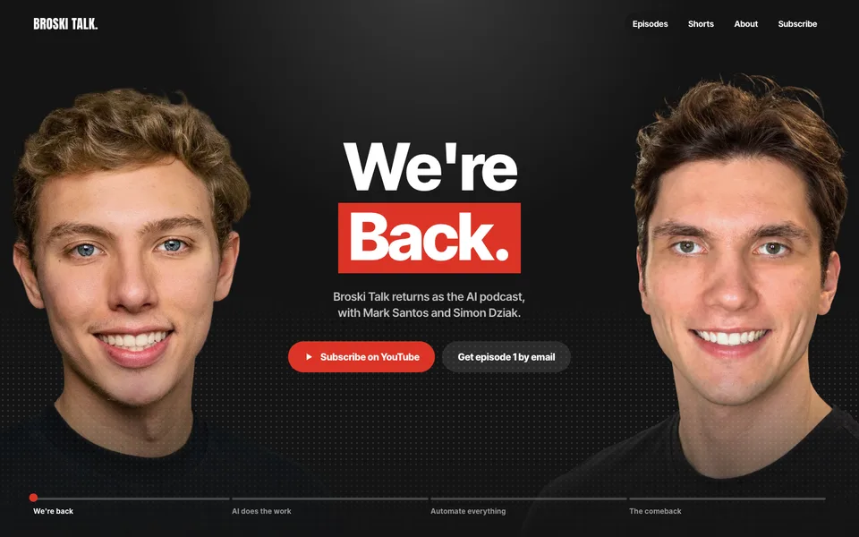
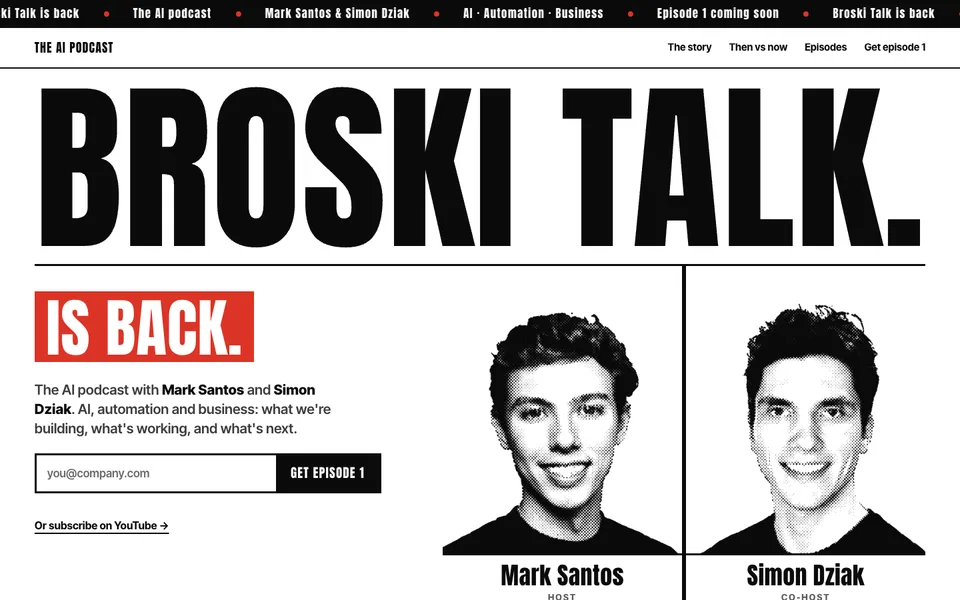

Same brand kit, three directions. Open each one, scroll it all the way down, and on a phone too.

A · ON AIRThe banner comes alivePure black, a live waveform across the hosts. Press play and the intro music drives the waveform, the hosts turn to colour and the ON AIR light goes red.

B · THUMBNAILA living YouTube thumbnailFaces pinned to the screen edges while the red-box headline rewrites itself as you scroll, then a YouTube-style channel: episode grid, Shorts, channel header.

C · THE COMEBACKA fight-night comeback posterWhite paper, giant Anton, halftone portraits. The 17-episode comeback chart, a then-vs-now tale of the tape, and the card of what's coming.